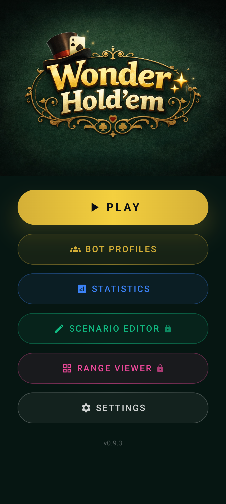
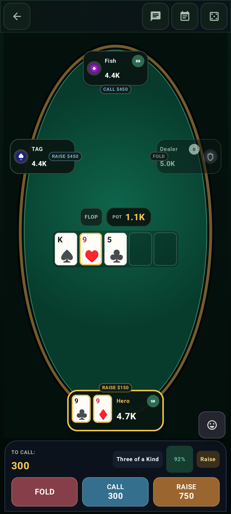
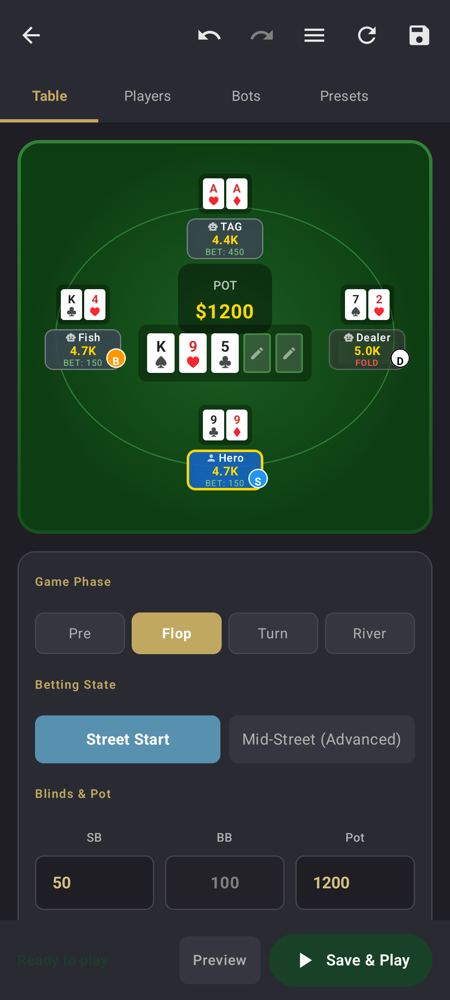
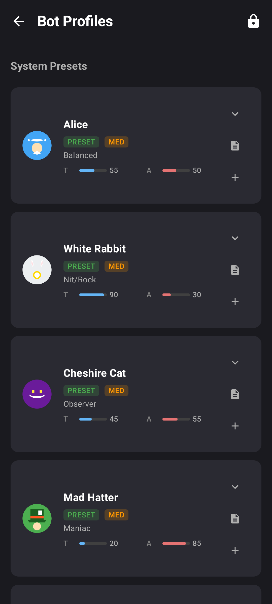
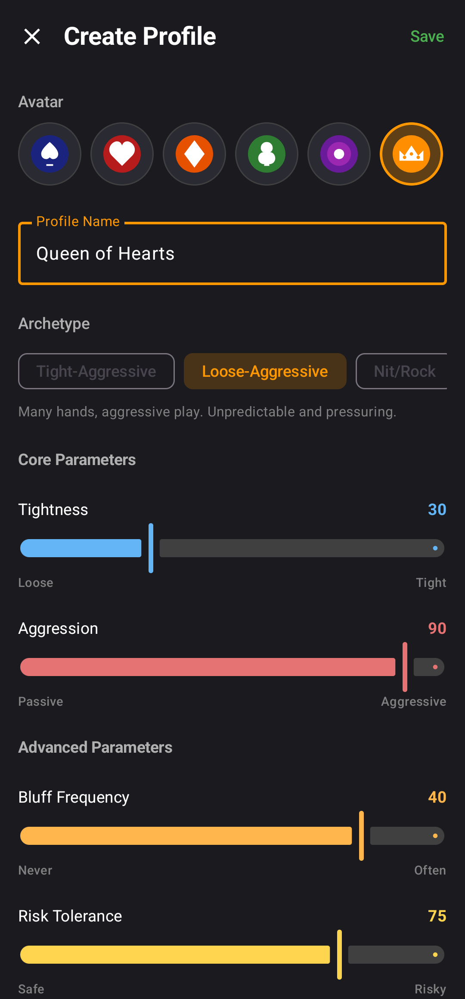
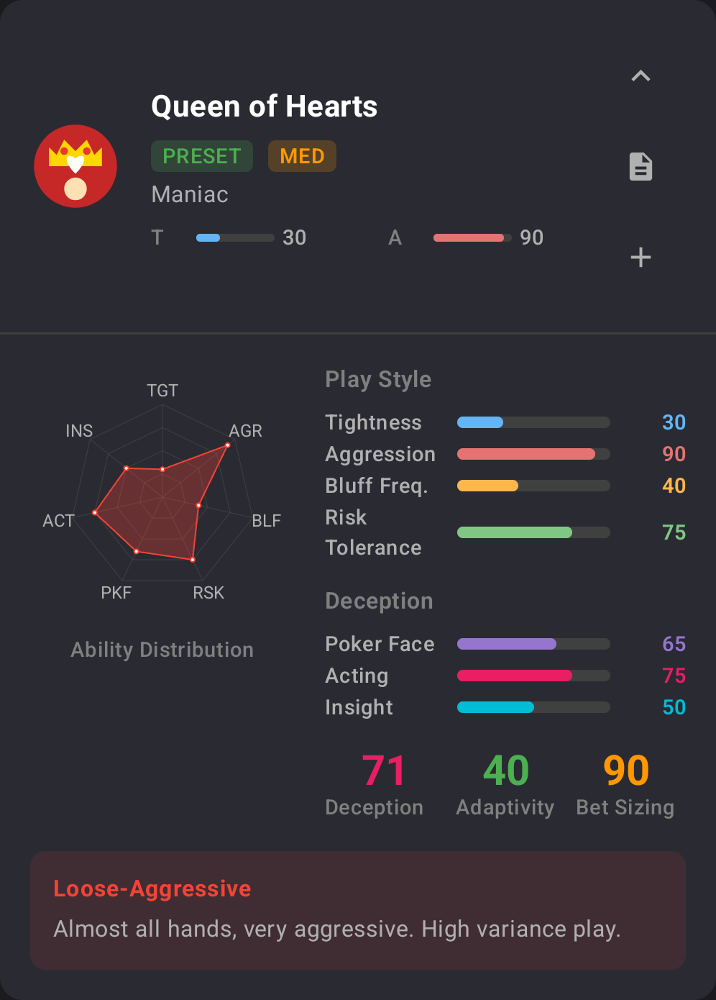

Solo Android Product · Released on Google Play outside Korea
Wonder Holdem
서버 개발 17년의 도메인 설계 경험을 바탕으로 제품 정의·UX·Android 구현·홀덤 엔진 ·규칙 기반 봇 AI·수익화·한국 제외 해외 Google Play 배포 를 1인이 수행한 싱글플레이 홀덤 연습 앱박근혁 · Backend Engineer · 2025.11 ~ 진행 중
Google Play 스토어 페이지 (미국)
한국 스토어에는 출시하지 않아 한국에서 기본 주소로 열면 페이지를 찾을 수 없습니다. 위 링크는 미국 스토어(gl=US)로 열어 한국에서도 실제 등록 정보를 볼 수 있습니다. 설치는 출시 국가 계정에서만 가능합니다.
해외 Google Play 출시
Kotlin · Jetpack Compose
Clean Architecture · MVVM
2~7인 싱글플레이
9개 설정 가능 아키타입
12개 행동 조정 변수
233개 AI 결정 시나리오
Billing · AdMob · Firebase
9개 언어
이 프로젝트가 보여주려는 것
제품을 정의하고 화면과 기능을 설계해 Android 앱으로 구현한 뒤 Google Play 배포까지 혼자 마감하는 실행력 과
복잡한 규칙·확률·상태를 측정·튜닝·회귀 검증이 가능한 시스템으로 만드는 설계력 을 함께 보여줍니다.
공개 앱, 실제 실행 화면, 자동화 테스트와 AI 결정 시나리오를 근거로 제시합니다.
1. 한눈에 보기
Google Play
한국 제외 해외 공개 배포
233/233
AI 결정 매트릭스 · 2026.07.18
구분 내용
제품 현금 베팅·환전 기능 없이 핵심 게임을 오프라인에서 플레이하며 AI와 반복 대결하는 Texas Hold’em 연습 앱 단독 수행 범위 제품 정의 · 화면/기능 기획 · UX · Android 앱 · 게임 엔진 · 봇 AI · 테스트 · 다국어 · 수익화 · Google Play 배포 앱 기술 Kotlin · Jetpack Compose · Material 3 · Hilt · Coroutines/Flow · Navigation Compose · Room · DataStore 제품화 기술 Google Play Billing · AdMob · Firebase Crashlytics/Analytics · R8/리소스 축소 · release signing · 개인정보처리방침 코드 규모 메인 Kotlin 약 7.6만 LOC · 테스트 Kotlin 약 3.0만 LOC · 453개 @Composable 선언 · 117커밋 현재 버전 한국 제외 해외 Google Play 공개 버전 v0.9.2 · 현재 소스 v0.9.3

제품의 전체 진입점. 바로 플레이하는 기능뿐 아니라 봇 프로필, 통계, 시나리오 편집기, 레인지 뷰어, 설정까지 하나의 연습 제품으로 구성했습니다.

4인 Flop · 3-way 팟. TAG의 가상 칩 450 Raise와 Fish의 450 Call 뒤, Hero의 트립스·승률 92%·Call 300·Raise 750을 실제 엔진 상태에서 함께 판단합니다.
스크린샷 기준
2026.07.27 현재 소스를 Android API 36 에뮬레이터에서 직접 실행·조작 했습니다.
게임 장면은 카드·스택·팟을 검증용 시나리오로 구성한 뒤 실제 엔진에 투입해 진행·렌더링했으며, 모든 이미지는 앱 콘텐츠 영역만 사용했습니다.
2. 기획에서 Google Play까지 — 혼자 제품을 끝내는 범위
제품의 목적과 사용 흐름을 정의하고, 화면·기능·기술 구조를 설계해 출시와 운영을 고려한 형태로 완성했습니다.
01 · PRODUCT
제품 정의
현금 베팅·환전 기능 없이 AI와 반복 플레이하는 오프라인 홀덤 연습 앱
02 · UX
화면·기능 기획
게임 UX, 레이아웃, 시나리오, 프리미엄, i18n 문서화
03 · BUILD
Android 구현
Compose UI, ViewModel, 엔진, 저장소, 결제·광고 통합
04 · VERIFY
다층 검증
도메인 테스트, 결정 매트릭스, 스크린샷, Maestro API 36 에뮬레이터 E2E
05 · RELEASE
스토어 출시
서명·축소·Crashlytics·개인정보·Play Billing까지 마감
사용자가 반복할 의사결정부터 정의 — 현금 베팅·환전 기능 없이 포커의 확률·포지션·베팅 판단을 반복 연습하는 제품으로 범위를 고정했습니다.화면 단위가 아닌 사용 흐름 단위 기획 — 메인 메뉴 → 게임 시작 → 의사결정 → 핸드 결과 → 통계/히스토리의 기본 흐름과, 특정 상황을 직접 만들고 바로 플레이하는 시나리오 흐름을 함께 설계했습니다.개발자 도구도 제품 기능으로 전환 — 특정 카드·스택·포지션·스트리트·액션 이력을 구성하는 기능은 테스트 편의 기능에서 끝내지 않고 Scenario Editor 라는 연습 기능으로 완성했습니다.포커 지식을 시각 도구로 제공 — 169개 스타팅 핸드를 포지션·액션별 빈도로 보여주는 Range Viewer 를 구현해 봇 전략의 근거와 사용자의 연습 도구를 같은 데이터 모델로 연결했습니다.출시 이후를 고려한 제품화 — 무료/PRO 기능 경계는 UI와 ViewModel에서 이중 가드하고, Billing의 단일 상태 원천, 광고, 크래시 수집, 분석, 9개 언어, 개인정보처리방침을 앱 구조에 포함했습니다.

Scenario Editor. Pre/Flop/Turn/River, 플레이어·봇, 홀 카드·보드 카드, 블라인드·팟·행동 이력을 편집하고 검증한 뒤 Save & Play 로 실제 엔진에 투입합니다.

Bot Profiles. 내장 프리셋의 아키타입·난이도·Tightness·Aggression을 비교하고, 상세 능력치 확인과 사용자 프로필 생성을 한 흐름으로 연결했습니다.
Google Play 해외 출시 및 운영 기반
출시 항목 구현 근거 의미
Google Play 해외 공개 배포 Wonder Holdem 스토어 페이지 한국을 제외한 출시 국가에서 패키지 com.endside.holdem으로 실제 사용자 설치 가능 Release 빌드 서명 설정 · R8 minify · resource shrink · native debug symbol 디버그 앱이 아니라 배포 가능한 산출물 관리 수익화 Google Play Billing 7.1.1 · AdMob PRO 기능과 광고가 연결된 실제 제품 모델 운영 가시성 Firebase Crashlytics · Analytics 출시 후 크래시와 이용 흐름을 관찰할 기반 글로벌 대응 영어·한국어·일본어·독일어·프랑스어·스페인어·브라질 포르투갈어·중국어 간/번체 949개 기본 리소스 키 · 8개 locale parity · 길이·번역 검토 체계
3. 한 핸드를 끝까지 진행하는 싱글플레이 도메인 엔진
화면 뒤에는 블라인드부터 쇼다운·분배까지 한 핸드를 끝까지 진행하고, 다음 핸드로 이어지는 독립적인 Texas Hold'em 도메인 엔진이 있습니다.
Game loop and clean boundaries
Jetpack Compose UI
카드·테이블·액션 패널·통계·다이얼로그
→
GameViewModel / PlayerActionManager
사람의 입력을 대기 액션으로 관리
→
ViewModelClient
Client.act() 요청에 PlayAction 반환
Domain Engine
Client.act() ↔ PlayAction · Blind → Deal → Betting → Showdown → Next Hand
Lifecycle and persistence
Application Use Cases
StartGame · RestoreGame · CreateSnapshot
→
GameCoordinator
플레이어 생성·테이블 구성·게임 생명주기 조정
→
Ports / Repositories
Room · DataStore · 게임 상태 어댑터
사람과 봇을 같은 인터페이스로 처리 — Client.act()를 ViewModelClient와 AdaptiveBot이 함께 구현합니다. 엔진 입장에서는 입력 주체가 UI인지 AI인지 알 필요가 없습니다.포커 규칙의 예외까지 도메인에 격리 — 헤즈업 블라인드/액터 순서, 최소 레이즈 증가분, 폴드·올인·액션 완료 판정, 여러 사이드팟, 남은 카드 자동 딜, 쇼다운과 동률 분배를 서비스로 분리했습니다.칩 보존을 불변식으로 검증 — 플레이어 스택 + 커밋 베팅 + 팟 총합을 감사하고, 액션 금액은 허용 범위와 스택 상한으로 정규화합니다. 행동 시뮬레이터에서는 silent correction 0건을 별도 지표로 추적합니다.한 판이 아니라 플레이 세션 — 자동 다음 핸드, 게임 저장/복원, 핸드 히스토리, 세션 통계, 포지션/수익/플레이 스타일 분석으로 반복 플레이가 이어집니다.
4. 규칙 기반 적응형 봇 AI
머신러닝 모델이 아니라, 포커 규칙·확률·상대 행동 통계와 프로필 파라미터를 결합한 규칙 기반 적응형 의사결정 시스템입니다. 카드·포지션·스택·팟·멘탈·성격을 하나의 컨텍스트로 만들고 전략을 라우팅한 뒤 게임 규칙상 허용된 액션으로 보정합니다.
엔진별 전략 확장
BASIC과 PRO Adaptive 모두 우선순위 Strategy Router 를 사용합니다.
BASIC은 기본 성향을 적용하고, PRO Adaptive는 봇 프로필·상대 추적·멘탈 상태를 추가 결합합니다.
Adaptive bot decision pipeline
GameEventBus
핸드·액션·승패·스택 변화 이벤트 발행
→
OpponentTracker
VPIP·PFR·3bet·AF 등 상대 행동 통계 누적
MentalStateManager
틸트·자신감·연승/연패·큰 팟 반응
→
BotDecisionContext
카드·보드·SPR·pot odds·포지션·프로필 결합
→
StrategyRouter
우선순위 전략 선택 + 보수적 게이트 + 강등
Push/Fold
5BB 이하 숏스택 전용, 포지션·Chen 점수·올인 게이트
Pre-Flop
169핸드 콤보 가중 퍼센타일 × 목표 레인지 × 포지션
Post-Flop
AIR/DRAW/MEDIUM/STRONG/MONSTER 5버킷 × 보드 텍스처
Chen Fallback
예외·기본 경로와 보수적 액션 필터
9
설정 가능 아키타입
TAG · LAG · NIT · Calling Station · Maniac · Tricky · Balanced · Observer · Actor
12
내장 캐릭터 프리셋
난이도·성격·대표 능력치가 다른 프리셋을 싱글플레이 좌석에 배치
12
행동 조정 변수
앱 편집 UI 9개 + 내부 캘리브레이션 3개로 레인지·빈도·사이징·적응 강도 조절
프리플랍은 169개 핸드의 퍼센타일 모델 — “AA면 레이즈” 같은 if 문 나열이 아니라 콤보 가중 순위, 포지션별 목표 VPIP, 오픈/3bet/4bet 단계, 가격 티어, 스택 깊이로 오픈·디펜드·리레이즈 레인지를 계산합니다.포스트플랍은 핸드 버킷 × 정책 테이블 — 에퀴티와 실제 홀카드가 참여한 드로우를 분류하고, 베팅을 맞았는지, 보드 텍스처와 SPR이 어떤지에 따라 체크·콜·밸류벳·세미블러프·폴드를 혼합합니다.성격 수치가 실제 행동에 연결 — Tightness는 레인지 폭, Aggression은 베팅/3bet 빈도, Bet Sizing Bias는 금액, Adaptivity는 상대 exploit 강도, Tilt/Confidence는 콜다운과 블러프 빈도를 바꿉니다.상대 행동 통계를 누적해 대응 전략 조정 — OpponentTracker가 누적 통계를 만들고, CounterStrategySelector가 니트에는 스틸/블러프를 늘리고 콜링 스테이션에는 블러프를 줄이는 식으로 대응 강도를 조정합니다.감정과 기만도 시스템으로 모델링 — 내부 틸트·자신감 상태값과 화면에 보이는 상태를 분리하고 Poker Face·Acting·Insight 파라미터로 거짓 신호와 간파 확률을 계산합니다.마지막에는 최종 유효성 검사 — 허용된 액션 타입만 내보내고 금액은 최소 레이즈·현재 베팅·스택 상한에 맞춰 정규화합니다. 보수적 올인 게이트를 통과하지 못한 선택은 가격에 맞는 Call/Check/Fold로 강등합니다.

행동을 직접 설계하는 편집 UI. Queen of Hearts 프리셋과 같은 핵심 수치인 Tightness 30·Aggression 90·Bluff 40·Risk 75로 사용자 프로필을 구성하는 실제 화면입니다.

내장 Queen of Hearts 프리셋의 확장 스탯. 레이더 차트와 Poker Face 65·Acting 75·Insight 50·Deception 71·Adaptivity 40·Bet Sizing 90을 한 화면에서 확인합니다.
행동 지표로 튜닝하고 회귀 검증했습니다
12개 · 10,560핸드
B3 전체 프리셋 기준선 · 2026.07.18
82,944결정
B3 기준선의 모든 의사결정 trace
0건 · 0건
의도하지 않은 액션 보정 · 반복 min-raise
233/233
69,900결정 PASS · 2026.07.18
기준선과 최신 재검증 구분
10,560핸드·82,944결정은 2026.07.18 B3 전체 12프리셋 기준선 입니다.
이후 Dormouse 프리플랍 빈도 조정을 반영한 최종 소스에서는 대표 6개 라인업 3,600핸드를 다시 측정했습니다.
검증 층 범위 발견·방지하는 문제
결정 매트릭스 233 시나리오 × 300 seed = 69,900결정 · 233/233 PASS (2026.07.18) 경계 핸드, 가격 임계, 믹싱 비율, 사이징, 올인·강등·불변식 행동 시뮬레이터 B3 기준선: 12개 프리셋 · 10,560핸드 · 82,944결정 · 이후 최종 소스 대표 6개 라인업 3,600핸드 재측정 VPIP/PFR/3bet/AF/WTSD/C-bet, 올인 1.16~3.06%, 의도하지 않은 액션 보정 0건, 반복 min-raise 0건을 측정 테스트 자산 944개 @Test 선언 · Gradle test/스크린샷 기준 검증 성공 (2026.07.27) 베팅·팟·쇼다운·핸드 평가·전략·저장/복원 회귀 시각 회귀 Compose 스크린샷 기준 이미지 29종 2~7인 테이블, 큰 글꼴, 다국어, 사이드팟, 각 스트리트의 잘림·겹침
5. 서버 설계 경험을 확장한 Android 아키텍처
Compose 화면이 게임 규칙을 직접 소유하지 않도록, 도메인 엔진을 Android 프레임워크에서 분리하고 포트와 어댑터로 경계를 세웠습니다.
Layer ownership
UI Layer
Compose Screens/Components · ViewModel · UI State · Navigation
→
Application
Use Cases · GameCoordinator · Player/Bot Factory · Client bridge
→
Domain
게임 규칙 · 전략 · 계산기 · EventBus · Ports
Infrastructure/Data
Room · DataStore · Logger · Billing · Firebase adapters
도메인은 Android를 모릅니다 — 게임 엔진과 AI 핵심은 별도 domain-core/domain-model 모듈로 분리해 JVM에서 빠르게 검증하고, Android 앱은 UI·저장·플랫폼 어댑터를 제공합니다.상태 소유권을 분리 — Table/Player/Pot의 규칙 상태는 도메인이, 화면 표시 상태는 GameUiState가, 영속 상태는 Room/DataStore가 소유합니다.DI로 구현 세부를 바꿀 수 있게 — Repository·Logger·Evaluator·Game Service를 Hilt로 바인딩해 테스트 더블과 플랫폼 구현을 교체합니다.디버그 자동화도 아키텍처에 포함 — ADB 명령을 typed command/dispatcher/handler로 분리해 화면 이동·게임 액션·프리미엄·봇 수를 자동 제어하고, Maestro 시나리오와 연결했습니다.출시 품질을 화면 크기 하나로 판단하지 않음 — 2~7인 테이블, 한국어·독일어·포르투갈어, 큰 글꼴, side pot, speech bubble, spectator 등 다양한 상태를 스크린샷 기준선으로 고정했습니다.
서버에서 쌓은 설계력을 제품 정의·화면·Android 구현·게임 엔진으로 확장해,
Wonder Holdem은 실행 가능한 앱, 해외 공개 스토어, 코드와 테스트로 그 범위를 보여주는 프로젝트입니다.